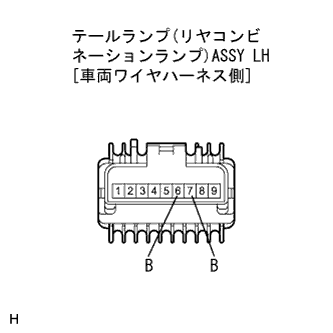

Rear Combination Light Assembly LH On-vehicle Inspection |
| 1. Inspect Rear Combination Light Assembly LH |
Measure the voltage.
Disconnect the connector.
 |
Using SST (Toyota electrical tester), measure the voltage between each terminal of the vehicle side wire harness connector and body ground.
| Tester Connection (Terminal Symbol) | Condition | Standard |
|---|---|---|
| 7 (B) - Body ground | Brake pedal not depressed → depressed | Below 1 V → 11 to 14 V |
| 6 (B) - Body ground | Headlight dimmer switch OFF → TAIL | Below 1 V → 11 to 14 V |